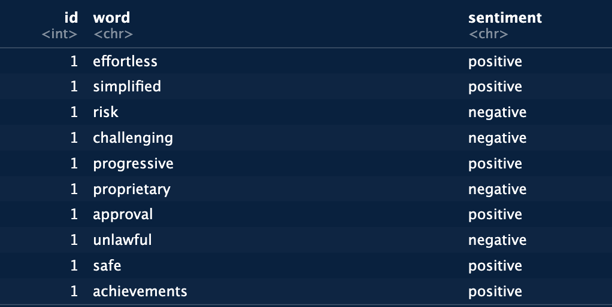

Code
# load libraries
library(LexisNexisTools)
library(dplyr)
library(readr)
library(stringr)
library(here)
library(tidytext)
library(tidyr)
library(ggplot2)March 9, 2024
Text sentiment analysis is an increasingly popular field that involves evaluating text data to identify and categorize sentiments such as positive, negative, or neutral. This technique utilizes a lexicon, which assigns sentiment values to words, to assess the overall sentiment of a given text. This method can also be used to identify popular “topics” within a set of text, by grouping words that commonly occur together. For example, a model may identify a group of words like “amazon, deforestation, tree, burning, impact, biodiversity” because these words have a high probability of occurring together. Text sentiment analysis has a variety of practical applications, one of which was illustrated by Nike’s use of this method to monitor public opinion on social media following its sponsorship of NFL quarterback Colin Kaepernick.
For this project, I used a relatively basic text analysis approach, where I downloaded 100 articles from the UCSB Library website, that had relation to the word “water”. I then analyzed the overall sentiment of these articles, as well as a breakdown of the most common words within each sentiment category. I’ll take you through the process below.
These were the packages that I used for this project and how I set up the directory to source the files from:
This next step is t read in all of the .docx files and parcel out each of the components of those files. The three parts are the headline of the article, the article ID, and the text within each of those articles. This is necessary to perform analysis on these components later on.
# read in articles --> I chose articles involving "water"
dat <- lnt_read(post_files)
# separate components of each article
meta_df <- dat@meta
articles_df <- dat@articles
paragraphs_df <- dat@paragraphs
dat2 <- tibble(Date = meta_df$Date, Headline = meta_df$Headline, id = articles_df$ID, text = articles_df$Article) |>
distinct(Headline, .keep_all = TRUE) # remove duplicate articlesThere are two different sentiment lexicons that I used for this analysis. The first, which I loaded below, is the bing sentiment lexicon. This is a binary classification system, where it assigns either a “positive” or a “negative” sentiment to each word.
During this next step, each of the articles is broken down into individual words (“tokens”). Then, the bing sentiment values are attached to each of those words. For more accurate results, stop-words are taken out of the word list. These are filler words (for, and, the etc.) that don’t contribute to the analysis.
# break down each article body into individual words
text_words <- dat2 |> unnest_tokens(output = word, input = text, token = 'words') |>
filter(!grepl("\\.com$", word)) # remove all words ending in ".com" from list
# add in sentiment associations with the words
sent_words <- text_words |>
anti_join(stop_words, by = 'word') |> # take out stop words
inner_join(bing_sent, by = 'word') |> # add in sentiment associations
mutate(sent_num = case_when(sentiment == 'negative' ~ -1,
sentiment == 'positive'~ 1))
sent_wordsHere is an example of what the output looks like:

This next step uses the values assigned to each word above to calculate the average sentiment value over all of the articles.
It ended up calculating a value of -0.146. This means that, overall, the articles had a slightly negative sentiment. Here is a plot showing the breakdown of each of the articles and the number of positive and negative words in each. You can get a good idea of the general sentiment with this visual.
# plot sentiment breakdown for each article
ggplot(sent_article, aes(x = id)) +
theme_classic() +
geom_col(aes(y = positive, fill = "Positive"), stat = 'identity') +
geom_col(aes(y = negative, fill = "Negative"), stat = 'identity') +
labs(title = "Sentiment Analysis: 'Water'", x = 'Article ID', y = 'Count of Positive / Negative Words') +
scale_fill_manual(values = c("Positive" = 'slateblue', "Negative" = 'red4'), name = "Sentiment") +
scale_x_continuous(expand = c(0, 0)) +
scale_y_continuous(expand = c(0, 0)) +
theme(plot.title = element_text(hjust = 0.5))This next section is where I use the second of the sentiment lexicons, that I mentioned earler. The “nrc” lexicon is a bit more complex than the “bing” lexicon. In addition to “positive” and “negative”, it also includes “anger”, “fear”, “anticipation”, “trust”, “surprise”, “sadness”, “joy”, and “disgust”. This allows you to get a higher resolution picture of the sentiment breakdown across the articles. Below is the code a sample of the output for attaching this lexicon to the article words.
# load nrc sentiment lexicon
nrc_sent <- get_sentiments('nrc')
# remove stop words and join nrc sentiments to article word list
nrc_word_counts <- text_words |>
anti_join(stop_words, by = 'word') |>
inner_join(nrc_sent) |>
count(word, sentiment, sort = TRUE) |>
filter(word != "soil") # remove "soil" because of misleading classification in "disgust" category
nrc_word_countsTo better visualize this, I made a plot that has each of the nrc sentiments that are listed above and the corresponding 5 most prevalent categorized words in each.
nrc_word_counts |>
group_by(sentiment) |>
slice_max(n, n = 5) |>
ungroup() |>
mutate(word = reorder(word, n)) |>
ggplot(aes(n, word, fill = sentiment)) +
geom_col(show.legend = FALSE) +
facet_wrap(~sentiment, scales = "free_y") +
labs(title = "Top Words in Each NRC Emotion Category",
x = "Contribution to Sentiment", y = NULL) +
theme(plot.title = element_text(hjust = 0.5))As you can see, some sentiments are a bit more common among the articles, like “positive” and “trust”. The overall average sentiment was computed using the bing sentiment, so that may explain why that ended up being a slightly negative value, instead of an assumed positive value from looking at this plot.
This last plot breaks down each sentiment category as a percentage of the total sentiment words. I grouped the articles by date, so you can get a visual of how proportions change over time.
# join "Date" column onto nrc_word_counts data frame
nrc_word_counts2 <- nrc_word_counts %>%
left_join(text_words |> select(word, Date), by = "word")
# calculate total number of emotion words for each day
total_emotion_words_per_day <- nrc_word_counts2 |>
group_by(Date) |>
summarize(total_emotion_words = sum(n))
# calculate count of each emotion type per day
emotion_type_count_per_day <- nrc_word_counts2 |>
group_by(Date, sentiment) |>
summarize(emotion_type_count = sum(n))
# calculate percentage of total emotion words for each emotion type per day
emotion_type_percentage_per_day <- emotion_type_count_per_day |>
inner_join(total_emotion_words_per_day, by = "Date") |>
mutate(percentage = (emotion_type_count / total_emotion_words) * 100)
# plot percentage total emotion words of each emotion type over time
ggplot(emotion_type_percentage_per_day, aes(x = Date, y = percentage, color = sentiment)) +
geom_line() +
scale_color_viridis_d() +
scale_x_date(date_breaks = "1 day", date_labels = "%Y-%m-%d") +
labs(title = "Percentages of NRC Emotion Words Over Time",
x = "Date",
y = "Percentage of Total Emotion Words") +
theme_minimal() +
theme(plot.title = element_text(hjust = 0.5),
axis.text.x = element_text(angle = 45, hjust = 1),
panel.grid.minor.x = element_blank(),
panel.grid.minor.y = element_blank())This was a relatively simple analysis, but had some really interesting insights. It seems like, for the articles involving water that I chose, the general sentiment is more positive than negative (ignoring the bing-calculated average). This process definitely has quite a bit of room for error. One example is that, originally, the nrc lexicon had put the term “soil” as one of the top 5 contributors to the “disgust” category. This was likely due to the fact that “soil” had more than one meaning (e.g. soil yourself or soil that plants grow in). I ended up removing that term because, in this context, that categorization did not make sense. Context is always important to pay attention to as well as different meanings and usages of words.
@online{mcconnell2024,
author = {McConnell, Fletcher},
title = {Analyzing {Text} {Sentiment} from {Online} {Articles}
{Involving} the {Phrase} “Water”},
date = {2024-03-09},
url = {https://fletcher-m.github.io/blog/2024-03-09-shark-aggression-analysis/},
langid = {en}
}